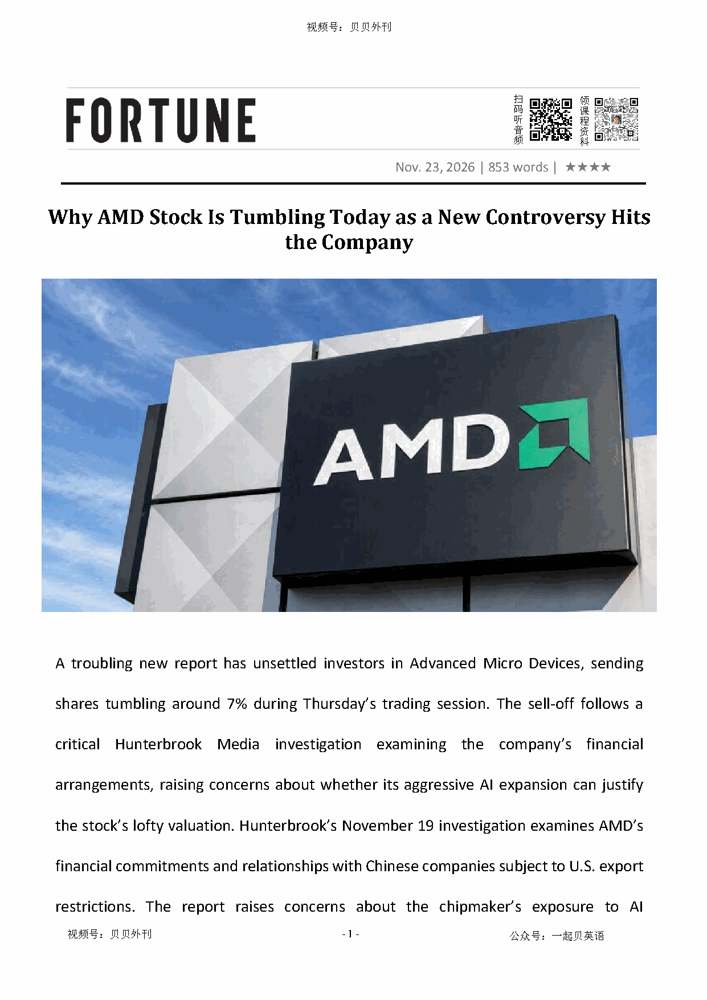

02 HEADLINE / 标题中英文解释
Why AMD Stock Is Tumbling Today as a New Controversy Hits the Company
tumble
暴跌；骤降
to fall suddenly and by a large amount
Why AMD Stock Is Tumbling Today as a New Controversy Hits the Company
暴跌；骤降
to fall suddenly and by a large amount文章分为两条相互关联的线索。
第一条线索是Hunterbrook对AMD的调查：报告质疑AMD数百亿美元的担保、基础设施安排和未来股权投资，并关注其中国合作方可能带来的出口合规风险。
AMD股价因此下跌约7%，但报告并未证明AMD违法，而且发布报告的关联基金持有AMD空头仓位。
华尔街分析师仍普遍看好AMD。
第二条线索是OpenAI降低对英伟达依赖的计划。
OpenAI正在设计自有芯片、考虑购买Google TPU，并推进与AMD的六吉瓦算力合作。
TensorWave将成为该合作的首家新云服务商，为OpenAI提供457兆瓦算力。
文章由此说明，AMD既面临财务与合规质疑，也迎来了人工智能公司主动分散英伟达供应风险所带来的巨大机会。
AMD's share price fell about 7% after Hunterbrook Media published a critical report. The report questioned AMD's large financial promises and some of its relationships with Chinese companies.
It also raised concerns about US export rules. However, the report did not prove that AMD broke the law.
Hunterbrook Capital also has a short position in AMD, so it may make money if AMD's share price falls. Wall Street analysts still believe AMD may grow in the long term.
Most analysts rate the stock as a strong buy. This is partly because large AI companies want more choices instead of depending only on Nvidia.
OpenAI now uses Nvidia chips for almost all of its models, so problems at Nvidia could seriously affect it. Anthropic already uses chips from Google, AMD, Amazon and Nvidia.
This gives Anthropic more flexibility and can lower its costs. OpenAI is trying to build a similar system.
It is designing its own chip, may buy Google TPUs and has signed a large agreement with AMD. The AMD deal could provide six gigawatts of computing capacity.
TensorWave will be the first new cloud company in this deal. It will provide 457 megawatts across several US data centres and may need three times as many workers.
AMD therefore faces real risks, but it also has a major chance to benefit as AI companies reduce their dependence on Nvidia.
第一部分：做空机构Hunterbrook发布调查，质疑AMD的财务承诺、AI基础设施合作以及与受美国出口限制的中国企业之间的关系。 第二部分：报告列出AMD数百亿美元的担保、未来股权投资和运营承诺，并提出合规风险；但文章同时提醒，Hunterbrook Capital持有AMD空头仓位，相关指控并不等同于已经证实的违规。 第三部分：华尔街分析师仍看好AMD的长期前景，AMD股票仍获‘强力买入’评级。 第四部分：文章转向OpenAI的算力多元化。OpenAI希望降低对英伟达的依赖，正在开发自有芯片并扩大与AMD、Google等供应商的合作。 第五部分：TensorWave将成为AMD—OpenAI六吉瓦算力协议中的首家新云合作方。合作规模巨大，但也要求TensorWave迅速扩充员工；英伟达管理层动荡和出口调查则继续为行业增加不确定性。
A troubling new report has unsettled investors in Advanced Micro Devices, sending shares tumbling暴跌 around 7% during Thursday’s trading session. The sell-off大量抛售 follows a critical Hunterbrook Media investigation examining the company’s financial arrangements, raising concerns about whether its aggressive AI expansion can justify the stock’s lofty高得不现实的 valuation.
一份令人不安的新报告令超威半导体（AMD）的投资者感到不安，导致公司股价在周四交易时段暴跌约7%。这轮抛售发生在Hunterbrook Media发布一份批评性调查之后。该调查审视了AMD的财务安排，并引发担忧：公司激进扩张人工智能业务，是否足以支撑其高企的估值。
Hunterbrook’s November 19 investigation examines AMD’s financial commitments承诺投入的资金 and relationships with Chinese companies subject to U.S. export restrictions. The report raises concerns about the chipmaker’s exposure to AI infrastructure partners, while alleging that certain Chinese server manufacturers continued using newer AMD technology despite U.S. trade restrictions.
Hunterbrook于11月19日发布的调查，审视了AMD的财务承诺，以及它与受美国出口限制的中国企业之间的关系。报告对这家芯片制造商在人工智能基础设施合作伙伴方面承担的风险表示担忧，同时声称，尽管存在美国贸易限制，某些中国服务器制造商仍在继续使用AMD较新的技术。
According to the report, AMD has committed about $28 billion through guarantees and infrastructure arrangements, alongside another $5.1 billion in potential future equity investments. These obligations stand against与……形成对照 $15.8 billion in cash and short-term investments, although many payments depend on future conditions rather than immediate requirements.
报告称，AMD已经通过担保和基础设施安排承诺投入约280亿美元，此外还有约51亿美元的潜在未来股权投资。与这些义务相对应的，是公司持有的158亿美元现金和短期投资；不过，其中许多付款取决于未来条件，并非立即需要支付。
Hunterbrook also highlights AMD’s growing operational commitments, which increased from $12.2 billion at the end of 2025 to $48.8 billion by September. Such spending could create financial risks if customer orders weaken while competing chip suppliers expand their production capacity.
Hunterbrook还强调，AMD的运营承诺正在迅速增长：从2025年底的122亿美元，增加到9月时的488亿美元。如果客户订单走弱，而竞争对手芯片供应商又在扩大产能，这类支出就可能造成财务风险。
Adding another concern, Hunterbrook Media alleges that Chinese server manufacturer IEIT incorporated newer AMD firmware into its products after joining a U.S. export blacklist. The investigation raises potential compliance合规 concerns, although these findings do not establish that AMD violated export restrictions.
另一个令人担忧的问题是，Hunterbrook Media声称，中国服务器制造商浪潮信息（IEIT）在被列入美国出口黑名单后，仍将较新的AMD固件整合进其产品。调查由此提出了潜在的合规问题，但这些发现并不能证明AMD违反了出口限制。
Investors should also consider that Hunterbrook Capital disclosed a short position空头仓位 in AMD, meaning the affiliated investment fund stands to benefit if the stock falls. The allegations therefore warrant scrutiny值得仔细审查 without being treated as established wrongdoing.
投资者还应注意，Hunterbrook Capital披露自己持有AMD的空头仓位，这意味着如果AMD股价下跌，与其有关联的投资基金将从中获利。因此，这些指控值得认真审视，但不能被当作已经坐实的不当行为。
Despite these concerns, Wall Street remains bullish看涨的 on AMD’s longer-term prospects, with analysts continuing to anticipate considerable gains. The stock holds a Strong Buy consensus rating, based on 29 Buys and 3 Holds. The average 12-month price target stands at $652.18, representing 37.5% upside上涨空间 from current levels.
尽管存在上述担忧，华尔街仍然看好AMD的长期前景，分析师继续预期其股价会有可观涨幅。基于29个‘买入’评级和3个‘持有’评级，AMD股票获得了‘强力买入’的一致评级。其12个月平均目标价为652.18美元，较当前水平仍有37.5%的上涨空间。
OpenAI pushes forward with AMD partnership amid ongoing efforts to diversify使多元化 from Nvidia. Long before Jensen Huang resigned, the major AI companies were already building toward a world where he was less central to their success. Companies like OpenAI and Anthropic have been acutely aware of their dependence on Nvidia hardware, given that much of the AI ecosystem is built on it, and have ongoing efforts to diversify their infrastructure.
在持续摆脱对英伟达单一依赖的过程中，OpenAI正推进与AMD的合作。早在黄仁勋辞职之前，大型人工智能公司就已经在为一个‘英伟达不再决定其成败’的世界做准备。由于人工智能生态系统很大一部分建立在英伟达硬件之上，OpenAI和Anthropic等公司一直清醒地意识到自身依赖，并持续推动基础设施多元化。
OpenAI is particularly vulnerable易受影响的 to any disruption in Nvidia’s business. Its models run almost entirely on Nvidia GPUs. Its CEO Sam Altman said this week that it would be ‘hard to imagine the AI revolution without Jensen’ when speaking at a Semafor conference.
英伟达业务一旦发生中断，OpenAI尤其容易受到影响，因为其模型几乎完全运行在英伟达GPU上。OpenAI首席执行官萨姆·奥尔特曼本周在Semafor会议上表示，‘很难想象没有黄仁勋的人工智能革命’。
Meanwhile, Anthropic has a more diversified chip base. It relies on four main providers: Google TPUs, AMD GPUs, Amazon Trainium GPUs, and Nvidia GPUs, its S-1 revealed. This is a major competitive advantage, and Anthropic has built a ‘proprietary orchestration layer编排层’ that optimizes which workloads run on which chips, reducing its costs.
相比之下，Anthropic拥有更加多元的芯片基础。其S-1文件显示，公司主要依赖四类供应商：Google TPU、AMD GPU、亚马逊Trainium GPU和英伟达GPU。这是一项重要的竞争优势。Anthropic还建立了一个‘专有编排层’，用来优化不同工作负载应该在哪类芯片上运行，从而降低成本。
OpenAI has been focused on replicating this setup through a few initiatives. For one, it’s designing its own chip architecture, called Jalapeño. It’s also signing deals with non-Nvidia suppliers. OpenAI is reportedly planning to buy Google’s TPU chips, and this week, it announced a big step forward in a massive compute deal it signed with AMD in October to provide 6 gigawatts of capacity.
OpenAI正通过多项举措复制这种多元配置。首先，它正在设计名为Jalapeño的自有芯片架构；同时，它也在与非英伟达供应商签署协议。据报道，OpenAI计划购买Google TPU芯片。本周，它还宣布，在10月与AMD签署的六吉瓦大型算力协议中取得了重要进展。
For context, that’s five times the capacity of OpenAI’s flagship data center in Abilene, Texas, which has 1.2 gigawatts, and is one of the world’s largest campuses. AMD is curiously run by Jensen Huang’s first cousin once removed, Lisa Su. Su’s least favorite question from reporters is about them being cousins; she hasn’t made it a part of her public image.
作为参照，六吉瓦相当于OpenAI位于得克萨斯州阿比林的旗舰数据中心容量的五倍；后者容量为1.2吉瓦，已经是全球最大的数据中心园区之一。有趣的是，AMD由黄仁勋的远房表亲苏姿丰领导。记者最爱追问二人的亲属关系，而这恰恰是苏姿丰最不喜欢的问题；她从未把这层关系塑造成自己公众形象的一部分。
OpenAI revealed the first neocloud新云服务商 company associated with the AMD deal, called TensorWave. TensorWave will provide OpenAI with 457 megawatts of capacity across multiple U.S. data center sites. That’s just 7.6% of the total capacity involved in the AMD deal. However, it’s TensorWave’s largest deployment ever, and the company will need to roughly triple its staff to support it.
OpenAI公布了AMD协议中的第一家新云服务公司TensorWave。TensorWave将在美国多个数据中心站点为OpenAI提供457兆瓦算力，这只占AMD协议总容量的7.6%。不过，这已经是TensorWave有史以来规模最大的部署，公司需要将员工人数扩大到目前的大约三倍才能提供支持。
Why announce this now? The timing might seem a bit opportunistic投机取巧的 given the turmoil at Nvidia, but it had been trying to determine the timing of this announcement for a while. It wasn’t sure now was the right time given Huang’s resignation, but it decided to move forward in light of this week’s Supercomputing 2026 conference, which is ‘one of the last major compute conferences of the year.’ The company wanted to get the news out ‘ASAP since there will be a lot of great people attending, a lot of great opportunities to meet with potential hires.’
为什么选择现在宣布？考虑到英伟达正处于动荡之中，这个时机看起来似乎有些投机，但OpenAI其实已经为公布时间斟酌了很久。黄仁勋辞职后，公司一度不确定现在是否合适；不过，本周举行的Supercomputing 2026是‘今年最后几场重要算力会议之一’，公司最终决定继续推进。OpenAI希望尽快发布消息，因为届时会有大量优秀人才参会，也有很多接触潜在招聘对象的机会。
OpenAI’s plan is to become less Nvidia reliant over time. But it would still be ideal for Altman if Huang came back to preserve stability. For now, Huang’s return is looking unlikely. The Nvidia board is already working with multiple search firms to find his replacement. Investigations into any foul play不当行为, specifically selling chips to China, are also underway. The board has created an oversight committee监督委员会 to ensure compliance with U.S. export controls, and Huang has agreed to appear before the House in a closed-door hearing on Dec. 1.
OpenAI的计划，是逐步降低对英伟达的依赖。不过，对奥尔特曼而言，如果黄仁勋能够回归并维持稳定，仍然是最理想的情况。目前看来，黄仁勋回归的可能性不大；英伟达董事会已经与多家猎头公司合作寻找继任者。针对潜在不当行为、尤其是向中国出售芯片的调查也在进行。董事会已成立监督委员会，以确保遵守美国出口管制；黄仁勋也同意于12月1日在众议院闭门听证会上作证。
暴跌；骤降
to fall suddenly and by a large amount
AMD shares tumbled after the report. 报告发布后，AMD股价暴跌。
A troubling new report has unsettled investors in Advanced Micro Devices, sending shares tumbling around 7% during Thursday’s trading session.
一份令人不安的新报告令超威半导体（AMD）的投资者感到不安，导致公司股价在周四交易时段暴跌约7%。这轮抛售发生在Hunterbrook Media发布一份批评性调查之后。该调查审视了AMD的财务安排，并引发担忧：公司激进扩张人工智能业务，是否足以支撑其高企的估值。
（股票等的）大量抛售
the rapid selling of many shares
The news triggered a market sell-off. 这则消息引发了市场抛售。
The sell-off follows a critical Hunterbrook Media investigation examining the company’s financial arrangements, raising concerns about whether its aggressive AI expansion can justify the stock’s lofty valuation.
一份令人不安的新报告令超威半导体（AMD）的投资者感到不安，导致公司股价在周四交易时段暴跌约7%。这轮抛售发生在Hunterbrook Media发布一份批评性调查之后。该调查审视了AMD的财务安排，并引发担忧：公司激进扩张人工智能业务，是否足以支撑其高企的估值。
高得不现实的；高企的
very high, especially higher than seems reasonable
Investors questioned the company’s lofty valuation. 投资者质疑该公司的高估值。
The sell-off follows a critical Hunterbrook Media investigation examining the company’s financial arrangements, raising concerns about whether its aggressive AI expansion can justify the stock’s lofty valuation.
一份令人不安的新报告令超威半导体（AMD）的投资者感到不安，导致公司股价在周四交易时段暴跌约7%。这轮抛售发生在Hunterbrook Media发布一份批评性调查之后。该调查审视了AMD的财务安排，并引发担忧：公司激进扩张人工智能业务，是否足以支撑其高企的估值。
承诺投入的资金；义务
a promise or obligation to provide money or support
The project requires a large financial commitment. 这个项目需要大笔资金投入。
Hunterbrook’s November 19 investigation examines AMD’s financial commitments and relationships with Chinese companies subject to U.S. export restrictions.
Hunterbrook于11月19日发布的调查，审视了AMD的财务承诺，以及它与受美国出口限制的中国企业之间的关系。报告对这家芯片制造商在人工智能基础设施合作伙伴方面承担的风险表示担忧，同时声称，尽管存在美国贸易限制，某些中国服务器制造商仍在继续使用AMD较新的技术。
与……形成对照；由……来承担
to be compared with an opposing amount or position
Those obligations stand against limited cash reserves. 这些义务与有限的现金储备形成对照。
These obligations stand against $15.8 billion in cash and short-term investments, although many payments depend on future conditions rather than immediate requirements.
报告称，AMD已经通过担保和基础设施安排承诺投入约280亿美元，此外还有约51亿美元的潜在未来股权投资。与这些义务相对应的，是公司持有的158亿美元现金和短期投资；不过，其中许多付款取决于未来条件，并非立即需要支付。
合规；遵守规定
the act of obeying a law, rule or standard
The committee will monitor export compliance. 委员会将监督出口合规情况。
The investigation raises potential compliance concerns, although these findings do not establish that AMD violated export restrictions.
另一个令人担忧的问题是，Hunterbrook Media声称，中国服务器制造商浪潮信息（IEIT）在被列入美国出口黑名单后，仍将较新的AMD固件整合进其产品。调查由此提出了潜在的合规问题，但这些发现并不能证明AMD违反了出口限制。
空头仓位
an investment position that gains when an asset falls
The fund disclosed a short position in AMD. 该基金披露持有AMD空头仓位。
Investors should also consider that Hunterbrook Capital disclosed a short position in AMD, meaning the affiliated investment fund stands to benefit if the stock falls.
投资者还应注意，Hunterbrook Capital披露自己持有AMD的空头仓位，这意味着如果AMD股价下跌，与其有关联的投资基金将从中获利。因此，这些指控值得认真审视，但不能被当作已经坐实的不当行为。
值得仔细审查
to deserve close and careful examination
The allegations warrant scrutiny. 这些指控值得仔细审查。
The allegations therefore warrant scrutiny without being treated as established wrongdoing.
投资者还应注意，Hunterbrook Capital披露自己持有AMD的空头仓位，这意味着如果AMD股价下跌，与其有关联的投资基金将从中获利。因此，这些指控值得认真审视，但不能被当作已经坐实的不当行为。
看涨的；乐观的
confident that prices or business results will rise
Analysts remain bullish on AMD. 分析师仍然看好AMD。
Despite these concerns, Wall Street remains bullish on AMD’s longer-term prospects, with analysts continuing to anticipate considerable gains.
尽管存在上述担忧，华尔街仍然看好AMD的长期前景，分析师继续预期其股价会有可观涨幅。基于29个‘买入’评级和3个‘持有’评级，AMD股票获得了‘强力买入’的一致评级。其12个月平均目标价为652.18美元，较当前水平仍有37.5%的上涨空间。
上涨空间；潜在好处
the potential for an investment to increase in value
The target suggests further upside. 该目标价意味着仍有上涨空间。
The average 12-month price target stands at $652.18, representing 37.5% upside from current levels.
尽管存在上述担忧，华尔街仍然看好AMD的长期前景，分析师继续预期其股价会有可观涨幅。基于29个‘买入’评级和3个‘持有’评级，AMD股票获得了‘强力买入’的一致评级。其12个月平均目标价为652.18美元，较当前水平仍有37.5%的上涨空间。
使多元化；分散风险
to develop a wider range of suppliers or activities
OpenAI wants to diversify its chip supply. OpenAI希望让芯片供应更加多元。
OpenAI pushes forward with AMD partnership amid ongoing efforts to diversify from Nvidia.
在持续摆脱对英伟达单一依赖的过程中，OpenAI正推进与AMD的合作。早在黄仁勋辞职之前，大型人工智能公司就已经在为一个‘英伟达不再决定其成败’的世界做准备。由于人工智能生态系统很大一部分建立在英伟达硬件之上，OpenAI和Anthropic等公司一直清醒地意识到自身依赖，并持续推动基础设施多元化。
易受影响的；脆弱的
easily harmed or affected by a problem
The company is vulnerable to supply disruptions. 该公司容易受到供应中断的影响。
OpenAI is particularly vulnerable to any disruption in Nvidia’s business.
英伟达业务一旦发生中断，OpenAI尤其容易受到影响，因为其模型几乎完全运行在英伟达GPU上。OpenAI首席执行官萨姆·奥尔特曼本周在Semafor会议上表示，‘很难想象没有黄仁勋的人工智能革命’。
编排层；协调不同计算资源的软件层
software that coordinates how workloads use different systems
The orchestration layer chooses the best chip. 编排层会选择最合适的芯片。
This is a major competitive advantage, and Anthropic has built a ‘proprietary orchestration layer’ that optimizes which workloads run on which chips, reducing its costs.
相比之下，Anthropic拥有更加多元的芯片基础。其S-1文件显示，公司主要依赖四类供应商：Google TPU、AMD GPU、亚马逊Trainium GPU和英伟达GPU。这是一项重要的竞争优势。Anthropic还建立了一个‘专有编排层’，用来优化不同工作负载应该在哪类芯片上运行，从而降低成本。
新云服务商；专注AI算力的新型云公司
a newer cloud provider focused on AI computing
TensorWave is an AI neocloud company. TensorWave是一家人工智能新云公司。
OpenAI revealed the first neocloud company associated with the AMD deal, called TensorWave.
OpenAI公布了AMD协议中的第一家新云服务公司TensorWave。TensorWave将在美国多个数据中心站点为OpenAI提供457兆瓦算力，这只占AMD协议总容量的7.6%。不过，这已经是TensorWave有史以来规模最大的部署，公司需要将员工人数扩大到目前的大约三倍才能提供支持。
投机取巧的；利用时机的
taking advantage of a situation for personal benefit
The timing may look opportunistic. 这个时机看起来可能有些投机。
The timing might seem a bit opportunistic given the turmoil at Nvidia, but it had been trying to determine the timing of this announcement for a while.
为什么选择现在宣布？考虑到英伟达正处于动荡之中，这个时机看起来似乎有些投机，但OpenAI其实已经为公布时间斟酌了很久。黄仁勋辞职后，公司一度不确定现在是否合适；不过，本周举行的Supercomputing 2026是‘今年最后几场重要算力会议之一’，公司最终决定继续推进。OpenAI希望尽快发布消息，因为届时会有大量优秀人才参会，也有很多接触潜在招聘对象的机会。
不当行为；违法行为
dishonest, illegal or harmful behaviour
Investigators found no proof of foul play. 调查人员没有发现不当行为的证据。
Investigations into any foul play, specifically selling chips to China, are also underway.
OpenAI的计划，是逐步降低对英伟达的依赖。不过，对奥尔特曼而言，如果黄仁勋能够回归并维持稳定，仍然是最理想的情况。目前看来，黄仁勋回归的可能性不大；英伟达董事会已经与多家猎头公司合作寻找继任者。针对潜在不当行为、尤其是向中国出售芯片的调查也在进行。董事会已成立监督委员会，以确保遵守美国出口管制；黄仁勋也同意于12月1日在众议院闭门听证会上作证。
监督委员会
a group responsible for checking that rules are followed
The board created an oversight committee. 董事会成立了监督委员会。
The board has created an oversight committee to ensure compliance with U.S. export controls, and Huang has agreed to appear before the House in a closed-door hearing on Dec.
OpenAI的计划，是逐步降低对英伟达的依赖。不过，对奥尔特曼而言，如果黄仁勋能够回归并维持稳定，仍然是最理想的情况。目前看来，黄仁勋回归的可能性不大；英伟达董事会已经与多家猎头公司合作寻找继任者。针对潜在不当行为、尤其是向中国出售芯片的调查也在进行。董事会已成立监督委员会，以确保遵守美国出口管制；黄仁勋也同意于12月1日在众议院闭门听证会上作证。
These obligations stand against $15.8 billion in cash and short-term investments, although many payments depend on future conditions rather than immediate requirements.
1. 主句：These obligations（主语）+ stand against（谓语）+ $15.8 billion in cash and short-term investments（介词宾语）。这里stand against表示把前述义务与公司现有资金放在一起比较。
2. although引导让步状语从句：many payments（主语）+ depend on（谓语）+ future conditions（宾语）。
3. rather than immediate requirements与future conditions形成对比，说明许多付款取决于未来条件，而不是眼前必须履行。
Investors should also consider that Hunterbrook Capital disclosed a short position in AMD, meaning the affiliated investment fund stands to benefit if the stock falls.
1. 主句：Investors（主语）+ should consider（谓语）+ that宾语从句。
2. that从句：Hunterbrook Capital（主语）+ disclosed（谓语）+ a short position（宾语）；in AMD修饰position。
3. meaning...是现在分词结果说明，其中the affiliated investment fund stands to benefit表示该关联基金可能获利。
4. if the stock falls是条件状语从句，说明获利发生的条件。
OpenAI revealed the first neocloud company associated with the AMD deal, called TensorWave.
1. 主干：OpenAI（主语）+ revealed（谓语）+ the first neocloud company（宾语）。
2. associated with the AMD deal是过去分词短语，后置修饰company，表示‘与AMD协议相关的’。
3. called TensorWave是另一个过去分词短语，补充说明这家公司名叫TensorWave。两个过去分词短语都围绕同一个宾语展开。